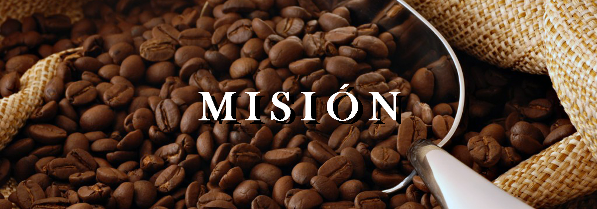
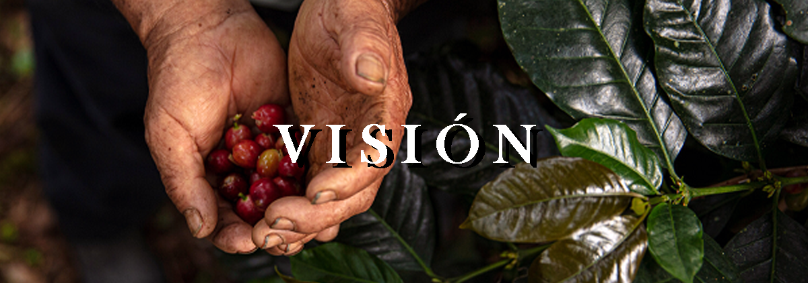

<link rel="stylesheet" href="../../components/ContentComponent/css/content.css">
<link rel="stylesheet" href="https://cdnjs.cloudflare.com/ajax/libs/font-awesome/6.3.0/css/all.min.css">

<!-- This section contains the Section Nosotros-->
<section class="py-12 bg-brown-50">
    <div class="container px-4 mx-auto mb-12">
        <h1 class="text-4xl font-medium text-center font-helvetica mb-14 md:mb-10 md:text-5xl mt-11 text-brown-100">Sobre nosotros</h2>
        <p class="mb-8 text-xl text-center text-brown-300 md:text-2xl md:mb-14 md:ml-32 md:mr-32 font-roboto">Es en el centro del estado, entre 1,200 a 1,400 msnm, en la Sierra de Zongolica, Veracruz, que surge <b>Café Tatiaxca</b> de auténtica altura, 100% artesanal, con gran aroma, cuerpo y acidez; es un grano cultivado por indígenas nahuas y seleccionado por su excelente calidad. </p>
        <div class="flex flex-wrap justify-center">
            <div class="w-full mb-4 md:pl-16 md:w-1/2">
                <div class="flex text-center">
                    <div class="flex-col">
                        
                        <p class="p-4 mt-4 text-xl md:text-2xl md:px-28 font-roboto text-brown-300"> Vender el café de la mejor calidad disponible en el mercado, mientras se consigue un ambiente familiar y amigable para todos los consumidores al mismo tiempo que mantenemos precios accesibles y apoyamos a productores campesinos de las zonas marginales.</p>
                    </div>
                </div>
            </div>
            <div class="w-full mb-4 md:pr-16 md:w-1/2">
                <div class="flex text-center">
                    <div class="flex-col">
                        
                        <p class="p-4 mt-4 text-xl md:text-2xl md:px-28 font-roboto text-brown-300">Ser reconocidos como líder en el mercado local de café, generando un vinculo con el cliente y manteniendo nuestros procesos sostenibles tanto economicamente como ecologicamente para disminuir el impacto ecológico.</p>
                    </div>
                </div>
            </div>
        </div>
    </div>
</section>
